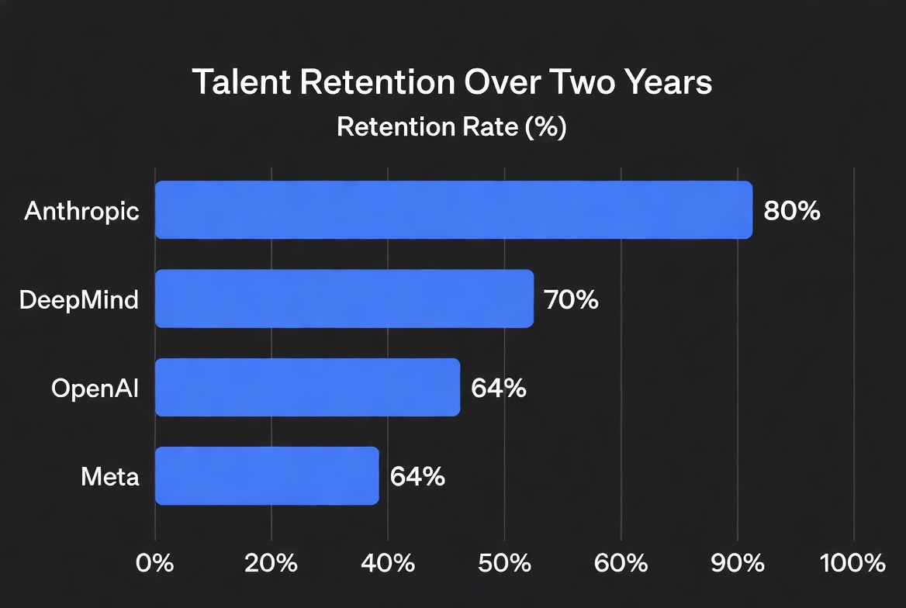
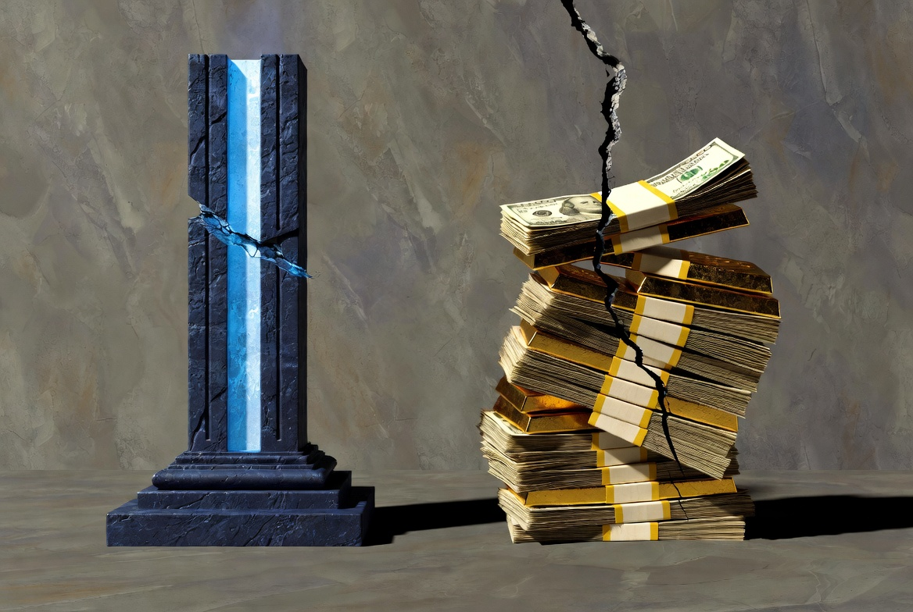

I was asked recently for thoughts on the fiercely competitive landscape of AI engineering talent and how organizations retain the people who actually ship. It is a fair question. I have spent most of a career on both sides of that table: making hiring decisions under real constraints, and later deciding whether any given environment was worth the hours of my own life.
The short answer is simple and, for many organizations, uncomfortable: if monetary compensation is your primary retention strategy, someone else will eventually offer more. The people who respond primarily to the next bid will leave. That is not a failure of the market. It is the predictable outcome of treating talent as a pure price signal.
The Limits of the Arms Race
Compensation in frontier AI roles has become extraordinary. Senior packages routinely reach into the high six figures and, at the extreme, eight or nine figures in total value. The market has priced the scarcity correctly in one sense. Demand far exceeds the supply of people who can do the work at the highest level.
Yet the data is consistent across multiple independent analyses: compensation is rarely the primary reason the strongest engineers leave. Career trajectory, the intrinsic interest of the technical problems, autonomy to make real decisions, quality of management, and the overall coherence of the working environment rank higher. Raising pay can buy roughly twelve additional months of tenure. After that, the underlying conditions reassert themselves.

One clear illustration appears in the retention numbers themselves. Organizations that combine competitive (but not always maximal) compensation with unusually clear technical direction, high autonomy, and relatively low internal political friction retain at higher rates and attract talent from higher-paying peers at striking ratios. The reverse pattern also holds: environments that rely primarily on large packages while allowing bureaucracy, unclear advancement, or high interpersonal friction lose people faster than the money can compensate for.
What the Data Actually Shows
Across studies of why technical professionals leave, the recurring factors are:
- Lack of clear career and technical advancement paths
- Work that ceases to be technically interesting or high-leverage
- Management that cannot engage with the substance of the work
- Environments that feel incoherent, political, or low-trust
- Burnout driven by perpetual urgency without corresponding progress
A well-known analysis of attrition predictors found that toxic culture was more than ten times as powerful as compensation in explaining industry-adjusted turnover. Unfair treatment, disrespect, and ethical inconsistency rank among the strongest drivers of voluntary exit. These are not soft preferences. They are measurable predictors of whether high performers stay.

Power, Greed, and the Tools of Unethical Leadership
Power and status are not inherently destructive. In technical organizations they become problematic when they turn addictive—when the primary product of the organization becomes internal ranking rather than external results. In that environment, manipulation and selective application of standards become useful tools. False or exaggerated allegations travel easily. Trust erodes. The people capable of independent technical judgment notice first and leave earliest.
Artificial intelligence has placed ethics in unusually public view. That visibility is valuable when standards are genuine and stable. It becomes corrosive when standards shift with external pressure, when accusations substitute for evidence, or when the moral language of the organization is used primarily as an instrument of internal control. The resulting climate is not “high standards.” It is low trust. High performers, who have options, respond by exercising those options.
The Foundation That Holds
The organizations that retain the people worth retaining invest in something harder than cash: a foundation of clear, stable moral and technical directives. These do not change with the news cycle. They are applied evenly. They prioritize the quality of the work and the integrity of the working relationships over the performance of virtue or the pursuit of internal status.
This is not nostalgia. It is engineering. Complex systems require predictable interfaces and low noise. Human teams are also systems. When the social layer generates high variance—shifting rules, selective enforcement, constant secondary agendas—the technical layer suffers. The best engineers notice the variance and optimize for environments that minimize it.
I have never had unlimited budgets for talent. What I learned under those constraints is still true under the current ones: the people you most want to keep are rarely the ones who can be purchased permanently. They stay when the work is real, the standards are coherent, the leadership is competent, and the interpersonal cost of remaining is low. Money is necessary. It is not sufficient.
If the goal is to recruit and retain genuine quality, the first investment is not another compensation band. It is the construction of an environment whose moral and technical foundation does not require constant renegotiation. The rest follows more easily than the bidding war ever will.